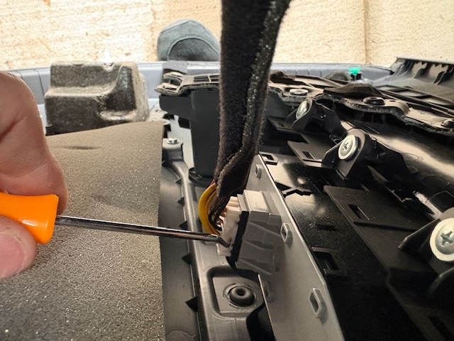

Removal of the Outer Door Panel
To remove the outer door panel on this vehicle, you must first remove the covers inside the pockets where the door lock is and where you grab to close the door. When you do this, you will see two Phillips head screws that you must remove.
Start by taking off the inner trim on the inside of the mirror. It is held in place by two plastic clips. Next, use a plastic trim removal tool to pry the door panel off the door. Be careful when doing this because the plastic clips can break if too much force is used.
Once you have the door panel loose, make sure you disconnect any wiring and the door handle/lock mechanism before completely removing the door panel.

Removal of the Inner Door Panel
After you have the door panel off, you will see the inner door panel held in place with ten 10mm bolts, a speaker held in place with four Phillips head 8mm bolts, one speaker connector, and one wire that runs to the mirror.
Start by disconnecting the connector on the speaker. Make sure to depress the tab before pulling the connector apart. Next, take an 8mm socket and a ratchet and remove the four bolts that hold the speaker in place.
- I use the 8mm socket instead of a Phillips head screwdriver because the bolts can be very tight, which can lead to stripping the head.
With the wire that runs up to the mirror, you will see a clip just above the inner door panel that keeps the wire in place. Pull that up slightly to slide the wire off the clip. Next, remove the two grey rubber plugs. This will give you access to the two 10mm bolts that hold the window to the window track.
You will want to roll the window up or down in order to align the bolts with the two access holes you just revealed. Once the bolts are lined up, use a 10mm socket, an extension, and a ratchet to remove them. This will free the window and allow you to lift it out of the way. Use suction cups or something similar to keep the window up and secure so it does not fall while you are working.
Now you can use a 10mm socket to remove the ten bolts that hold the inner door panel in place. Once those are removed, it will not fully come off yet, which is normal.
Removal of the Outer Door Handle
Now that you have the inner door panel loose, you have full access to remove the outer door handle. From the inside, you will see a connector attached to the door. Carefully disconnect that connector by depressing the tab and pulling it apart.
Next, from the end of the door, you will see a plug. Remove that with a small flathead screwdriver to reveal a 10mm bolt. This bolt has a keeper, so it will not fully come out. Fully loosen this bolt to remove the back part of the outer door handle. Lastly, slide the handle toward the back of the door and out, making sure not to damage the spacer or the paint.
When you get the new part, you might notice it is not painted. You can worry about getting it color-matched, or you can swap the exterior and only replace the internal mechanism. My part had a tiny screw holding it together and snap connectors that I had to pry apart. To put it back together, you simply push the two halves together and put the screw back in.
This was a much easier and cheaper option than getting the whole part painted.